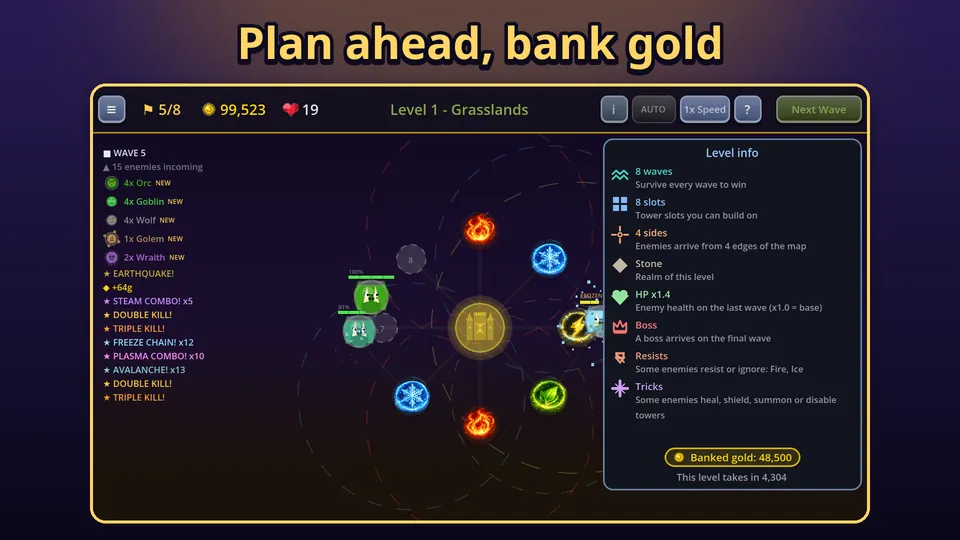

These Tower Defense Kingdom beginner tips are the things I would tell a friend who just installed the game. They cover what to build first, where gold should go, and a few screens that new players tend to skip. For the big picture of the game, see what Tower Defense Kingdom is. If you would like to follow along on your phone, you can get it on Google Play.
1. Read the level info before you start
Tap the small i button in the top bar of a level. The panel tells you how many waves there are, how many tower slots you have, how many sides enemies come from, the realm, the enemy health multiplier, whether a boss arrives on the final wave, which elements some enemies resist or ignore, and whether some enemies heal, shield, summon or disable towers. It takes ten seconds and saves a lost run.

2. Build one of each element
With 8 slots in the first levels you have room for all four elements, and you should use it. Fire burns, ice slows, lightning chains and earth hits an area. More importantly, different elements hitting the same enemy trigger combos, which are the strongest damage in the game. The full list is in the combo guide. Fire and ice towers cost 100 gold, lightning and earth 125, so a full set is affordable early.
3. Alternate elements around the ring
Place elements so that neighbours are different: fire, ice, lightning, earth, and then repeat. That makes combos more likely and keeps fusion possible later, because only neighbouring slots can merge.
4. Spread your first upgrades
Each tower has damage, speed, range, pierce and critical chance upgrades, plus an element special, and each goes to level 5. Costs rise with every level, so the first levels are cheap. Take several towers to about level 3 before you push one to level 5. This gives you combo coverage now and a pair that is ready to fuse around wave 5 or 6.
5. Do not skip range
Range is easy to undervalue. A tower with more range sees enemies for longer and, more importantly, overlaps with its neighbours, so combos happen more often. It is a cheap +12 percent per level.
6. Use the early send bonus carefully
Between waves you can call the next one early with the Next Wave button. Doing it quickly pays a small gold bonus, up to 30 gold, that shrinks by 5 for every second you wait after a wave ends. It is a good habit on easy levels when your defence is clearly stronger than the wave, and a bad one when you are still struggling. If you have the Speed Boost purchase, the speed button also gives 2x and 3x, but on a new map keep it at 1x until you know the enemies.
7. Do not waste your leftover gold
Gold you do not spend by the end of a campaign level is banked, win or lose, and added to the start of your next level. You can see the amount on the map select and in the level info panel. A level only takes in up to twice its own kill gold, so very large piles stay banked for later levels instead of making level 1 trivial. This means you never need to panic spend at the end of a level.

8. Go for stars, then mutators
You unlock new maps with stars. A win gives one star, finishing with at least half your lives gives two, and keeping at least 90 percent of your lives gives three, which is 18 of 20 lives. Gems for a win are 5 per star plus one per wave, so a three star win pays the most. Once a map has three stars, its mutators open up: Swift (enemies are 30 percent faster), Iron (enemy health x1.4), Fog (tower range x0.8), Scarce (gold x0.7) and One Element (locks you to a single element). Each one adds to the gem reward, from 20 percent for Fog up to 50 percent for One Element. They are a good way to get more from maps you already know, and a good reason to come back later.
9. Claim your castle income
Your castle earns gold and gems while you are away, up to 8 hours at a time. Open it when you start a session. Gems fund the skill tree, and the skill tree is how you get the power to keep up on later maps. For what to do once the first maps feel easy, read how to progress faster.
When a level goes wrong
If you lose, look at the wave list on the left of the screen. It shows what is coming and marks new enemy types. Losing to a boss or to a group of healers usually means you lacked damage in one element or a way to hold enemies in place. Check the resist line in the level info, add the element you were missing, and try again. Gold you left unspent is banked, so a lost run is not a total loss.
A simple opening for level 1
Place a fire tower and an ice tower next to each other. Add lightning, then earth, as gold arrives. Upgrade the fire and ice pair to about level 3, watch the combo log, and add range where enemies slip past. By wave 5 you should have all four elements and your first fusion in sight.
Try it
None of this needs a guide to get right, but it helps to know the levers. Play Tower Defense Kingdom on Google Play and see how far these habits take you.
Frequently Asked Questions
What should I build first in Tower Defense Kingdom?
Build one tower of each element if the level has room: fire, ice, lightning and earth. Mixed elements trigger combos, and having all four means you always have an answer for enemies that resist or ignore one element.
Should I upgrade one tower or many?
Spread your early upgrades over several towers, to about level 3 each. Combos need different elements to hit the same enemy, and fusion needs two towers with at least 3 stat levels each.
How do I get three stars on a level?
Finish the level with at least 90 percent of your lives left. With 20 lives that means losing no more than 2. Finishing with at least half your lives gives two stars, and any win gives one. Build combos early and keep the defence mixed.